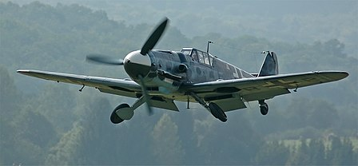

Мессершмитт Bf 109 (нем. Messerschmitt Bf 109, традиционное для СССР написание — Ме-109) — одномоторный поршневой истребитель-низкоплан, состоявший на вооружении Люфтваффе и ВВС различных стран почти 30 лет. В зависимости от модификации использовался в качестве дневного истребителя (включая специализированные модификации для малых высот и семейство версий высотных истребителей), дневного и ночного истребителя-перехватчика, истребителя-штурмовика, истребителя-бомбардировщика, истребителя-фоторазведчика и фоторазведчика без вооружения (в том числе и высотного), а также учебно-тренировочного истребителя. Являлся одним из двух основных истребителей «Люфтваффе», самым массовым самолётом Германии на протяжении всей Второй Мировой войны, а также самым массовым истребителем в истории.
По количеству произведённых машин (по состоянию на 14 апреля 1945 года только в Германии — 30 573 штук — включая самолётокомплекты запасных частей, составлявшие около 1/6 зачтенных как произведенные самолётов; общее производство — с учётом выпуска в франкистской Испании в 1944—1958 годах и послевоенной Чехословакии в 1945—1948 годах — превышает 33 000 экземпляров; есть также сведения, что суммарный выпуск самолётов семейства Bf.109 составил 34 826 или даже 34 852 экземпляра) является одним из самых массовых самолётов в истории, уступая лишь штурмовику Ил-2 (36 163 машины) и лёгкому самолёту общего назначения Cessna 172 Skyhawk. Иногда можно встретить утверждение, что учебный самолёт, а позже — в том числе и ночной бомбардировщик У-2 (По-2), также превосходил по объёмам производства Bf.109 (называются цифры до 40 тыс. выпущенных У-2). Но это не находит подтверждения в советских источниках, оценивающих производство У-2 в приблизительно 33 000 машин.
Предыстория
30 января 1933 года лидер НСДАП Адольф Гитлер был назначен рейхсканцлером Веймарской республики. Одной из важнейших задач новой власти являлась ликвидация ограничений в области вооружений, наложенных на Германию Версальскими соглашениями, и создание полноценных вооруженных сил. Уже в мае 1933 года создано Рейхсминистерство авиации, возглавляемое Германом Герингом, которому была поручена организация военно-воздушных сил — люфтваффе.
В начале 1934 года техническое управление (T-Amt) Рейхсминистерства авиации разработало технические требования для современного одноместного истребителя-моноплана, который должен был заменить бипланы Хенкель He-51 и Арадо Ar 68. Эти характеристики вместе с заказом опытных машин были направлены на ведущие авиаконструкторские фирмы — Heinkel, Focke-Wulf и Arado Flugzeugwerke. Вилли Мессершмитту отказали в контракте на разработку на том основании, что его фирма (Bayerische Flugzeugwerke, (Bf.)) не имела опыта в создании скоростных боевых самолётов. В техническом департаменте сложилось мнение, что если Мессершмитт и сможет создать истребитель, то последний не составит конкуренции самолётам более опытных конструкторов Вальтера Ретеля и Эрнста Хейнкеля. Глава секретариата по делам авиации Эрхард Мильх полностью разделял это мнение. Он полагал даже, что в случае успеха Мессершмитта он всё равно откажет «Байерише флюгцойгверке» (Bf.) в размещении заказа на производство.
Неприязнь между Вилли Мессершмиттом и Эрхардом Мильхом тянулась ещё с 1929 года и ещё больше обострилась с разрывом Люфтганзой контракта на десять транспортных самолётов, находящихся уже на сборке в Аугсбурге. Мессершмитт считал разрыв контракта незаконным, а БФВ, из-за невозможности вернуть аванс Люфтганзе, была вынуждена объявить о банкротстве. Война между Мессершмиттом и Мильхом обострилась. К моменту воскрешения «Байерише флюгцойгверке» Мильх, которому был обязан сам Гитлер, был назначен шефом секретариата по делам авиации. Так как теперь Мильх часто замещал Геринга, глава секретариата быстро обрел огромную власть, что позволило ему ограничить работу Мессершмитта и заказы его компании только лицензионным производством.
Не получая заказов от немецкого министерства авиации, Мессершмитт был вынужден обратиться за разрешением о разработке самолётов в интересах иностранных государств. Его соуправляющий Р. Кокотаки сумел заключить контракт с венгерской фирмой «ИКАР» из Будапешта о разработке и продаже лицензий на производства нескольких моделей лёгких самолётов. Это дало повод недоброжелателям обвинить «Байерише флюгцойгверке» в пренебрежении национальными интересами. В результате громкого скандала, разбирательств с гестапо и вмешательства Рудольфа Гесса Технический департамент подключил баварских авиастроителей к разработке нового истребителя.
После ознакомления с техническим заданием конструкторская группа немедленно приступила к разработке новой боевой машины. Учитывая сложные взаимоотношения с министерством авиации, Мессершмитт расценивал вероятность получения основного заказа как весьма низкую.
Из-за этого было принято решение отойти от точного следования техническому заданию и вести работу в инициативном порядке. Позднее Мессершмитт вспоминал, что при ориентировании на техническое задание получился бы весьма посредственный самолёт.
Разработанный «Байерише флюгцойгверке» самолёт вобрал в себя практически все технические новинки того времени. В работе над проектом использовались наработки фирмы по созданию скоростного спортивного самолёта Messerschmitt Bf.108 Taifun. Новый истребитель представлял собой цельнометаллический моноплан с хорошо проработанной аэродинамикой. Он имел убирающиеся шасси и закрытую кабину. Для обеспечения высокой скорости было разработано специальное крыло небольшого размера с выпускаемыми закрылками. Предполагалось, что самолёт будет оснащаться новым двигателем компании Junkers Jumo 210 мощностью 610 л. с., но работы над планером продвигались значительно быстрее работ над новым мотором, и на замену ему был выбран британский двигатель Rolls-Royce Kestrel VI мощностью 695 л.с.
Новый истребитель совершил свой первый полёт 28 мая 1935 года. В соответствии с принятой в Германии системой наименования он получил обозначение Bf 109V1. В сентябре 1935 года машину перегнали в Рехлин на полигон люфтваффе для сравнительных испытаний. Авиакомпании «Арадо», «Фокке Вульф» и «Хейнкель» также представили свои прототипы — Ar 80, Fw 159, He 112. Основная борьба развернулась между истребителями «Байерише флюгцойгверке» и «Хейнкеля». Несмотря на то, что скорость первого была на 17 км/ч выше скорости конкурента и он был проще в управлении, специалисты люфтваффе поначалу отдавали предпочтение машине Хейнкеля. Нелестные отзывы о истребителе Мессершмитта дал и знаменитый лётчик-ас Первой мировой войны Эрнст Удет (впоследствии ставший ярым сторонником принятия самолёта на вооружение).
Следующий прототип Bf 109V2, уже оснащённый двигателем Jumo 210A, приступил к испытательным полётам в январе 1936 года. Ещё в двух модификациях Bf 109V3 и Bf 109V4 были учтены требования по усилению вооружения. В истребитель Хейнкеля также были внесены существенные изменения. В марте 1936 года, так и не определившись с выбором, люфтваффе сделало предсерийный заказ на 10 истребителей обоих производителей. В августе того же года Мессершмитт-109 был впервые продемонстрирован широкой публике во время церемонии открытия Летних Олимпийских игр в Берлине. В начале 1937 года, после проведения войсковых испытаний в реальных боевых условиях, Bf.109 был принят на вооружение в качестве основного истребителя люфтваффе.
Так как проект самолёта Bf 109 был представлен в Рейхсминистерство авиации (RLM) компанией Bayerische Flugzeugwerke, во всех официальных немецких документах в обозначении самолёта использовался префикс «Bf».
Тем не менее, после июля 1938 года, когда компания «Bayerische Flugzeugwerke» в знак признания заслуг Мессершмитта была переименована в «Messerschmitt AG», внутри компании, а также в пропагандистских изданиях люфтваффе стало широко использоваться обозначение «Me 109». Это обозначение, вероятно, ошибочно, наносилось и на заводские таблички изготовителя. Однако официально немецкими вооружёнными силами префикс «Me» никогда не использовался.
В литературе, как времён Второй мировой войны, так и в современной, используются оба обозначения, и оба обозначения считаются правильными, хотя время от времени по этому поводу возникают споры.
Bf 109B
Первый промышленный вариант получил наименование Messerschmitt Bf 109B или «Бруно» (Bruno, в некоторых источниках известен как Bertha). Самолёт был оснащён двигателем Jumo 210Da мощностью 720 л. с. при 2700 об/мин с двухлопастным деревянным винтом фиксированного шага. Вооружение было ограничено только двумя пулемётами калибра 7,92 мм под капотом двигателя. Производство этой модификации началось в феврале 1937 года на заводе в Аугсбурге. В ходе серийного производства варианта В-1 были произведены некоторые доработки — тройная радиоантенна была заменена одним проводом, добавлены воздухозаборники для охлаждения пулеметов, а также увеличена длина фонаря кабины. Почти вся партия в 30 шт. была отправлена в легион «Кондор» в Испанию.
После выпуска 30 штук серии В-1 было отдано указание перевести производство в Аугсберге на серию В-2, которая отличалась только винтом изменяемого шага — металлическим VDM, выпускаемым по лицензии. Ввиду крупных заказов со стороны Люфтваффе производство новой серии в Аугсбурге, начавшееся с лета 1937 года, было дополнено с декабря 1937 года выпуском по лицензии и на заводе фирмы Физилер в Касселе.
Bf 109C
Messerschmitt Bf 109C-1, 6-47, 1.J/88 Легион Кондор, Испания, весна 1938
Весной 1938 года с конвейера сходит следующая массовая модификация самолёта, известная как Messerschmitt Bf 109C «Цезарь» (Caesar, в других источниках — Clara). Он имел ряд конструктивных усовершенствований по сравнению с Bf 109B и оснащался более мощным двигателем Jumo 210A с системой непосредственного впрыска топлива. Истребитель имел на вооружении четыре пулемёта: два из них располагались над двигателем, и по одному — у основания консолей крыла. Bf.109 B и C были примерно равны И-16 (тип 5) и уступали И-16(тип 10).
Bf 109D
За «Цезарем» последовала «Дора» (Dora), это имя принадлежит Messerschmitt Bf 109D. Его предполагалось оснащать двигателем Daimler Benz 600, мощностью 960 л. с. Но из-за дефицита двигателей, которые также шли на He.111, на «Дору» устанавливались Jumo 210D. Вооружение осталось такое же, как и на Bf 109C — 4 пулемёта 7,92. У незначительного количества вооружение состояло только из двух пулемётов.
Bf 109E
Следующей модификацией стал «Эмиль» (Emil) — Messerschmitt Bf 109E. Это была, по сути, первая по-настоящему массовая модель самолёта. Истребитель был оснащён новым двигателем Daimler-Benz DB 601 с системой непосредственного впрыска топлива и гидромуфтой в приводе нагнетателя. Но самым главным было то, что этот двигатель оказался намного надёжнее своего предшественника. На «Эмилях» устанавливался трёхлопастный винт VDM изменяемого шага. Самолёт получил приемо-передающую радиостанцию FuG 7, германский истребитель не имел никакой защиты пилота, а его бензобак оставался непротектированным, что, несомненно, снижало живучесть машины. Первые машины новой модификации поступили в войска в начале 1939 года. В основном «Эмили» были вооружены двумя 7,92-мм пулемётами, смонтированными в корпусе, и двумя 7,92-мм пулемётами, расположенными в консолях крыла. В конце 1939 года начали производить Е-3. Первоначально Е-3 получили мотор-пушку, но проблемы с перегревом заставляли её снимать в частях сразу после получения. На поздних Е-3 крыльевые пулемёты заменяли на пушки MG FF с боекомплектом 20 снарядов на ствол. Для установки пушек пришлось устанавливать обтекатели. С лета 1940 года Е-4 получили 20-мм пушки в консоли крыла MG FF (англ.)русск. (нем. FF = «Flügel Fest» — здесь рус. вмонтированный в консоль крыла — 20 снарядов на ствол, с 1941-го года MG FF/M, нем. М = Minenmunition — рус. фугасные патроны со 60 снарядами), пушки размещались в выштамповках с нижней стороны крыла. Начиная с серии Е7 оснащённой двигателями DB601N (осень 1940) на самолёте появляется переднее бронестекло кабины пилота толщиной 58 мм, установленное под углом 30 градусов от вертикали, и расположенная за баком 6-мм стальная бронеплита, перекрывающая всё сечение фюзеляжа.
Bf 109F
Битва за Британию показала, что «Эмиль» вполне способен на равных бороться с новейшим английским истребителем Спитфайр Марк I, но появление новых модификаций Спитфайра практически свело на нет это преимущество. На смену «Эмилю» пришёл «Фридрих» (другие источники называют эту модификацию «Фриц») — Messerschmitt Bf 109F «Фридрих» начал поступать в боевые части весной 1941 года, и к середине года 2/3 истребительных частей люфтваффе были вооружены именно этой машиной.
Bf 109G
Следующая модификация, Messerschmitt Bf 109G (Gustav, «Густав»), ставшая самой массовой моделью Bf 109, имела новый двигатель Daimler-Benz DB 605. Это был, по сути, двигатель DB 601 с блоком цилиндров, переработанным таким образом, что общий объём цилиндров возрос с 33,9 до 35,7 литров, что дало увеличение мощности на 175 лошадиных сил без заметного увеличения размеров. Новые самолёты стали поступать в войска в мае 1942 года.
Bf 109G-14
Данная модификация являлась логическим продолжением серии Bf 109G-6, но с попыткой стандартизации всех внесенных в G-6 изменений. Истребители Bf 109G-14 должны были получить последние изменения, которые были введены во время производства Bf 109G-6. Все компоненты самолёта, выпускавшиеся разными заводами, собирались унифицировать в целях оптимизации производственного процесса, эксплуатации и боевого применения. Bf 109 G-14 получил новый двигатель DB 605AM вместо DB 605A. Также для новых истребителей стала штатной система впрыска водо-метанола MW 50.На Bf 109 G-14 ранних партий часто устанавливали двигатели DB 605A, что делает их практически идентичными поздним версиям Bf 109G-6. Стоит отметить, что последние Bf 109G-6, выпущенные в июле 1944 года, получили новые моторы DB 605AM, то есть, по сути, уже представляли собой машины G-14. С другой стороны, из-за проблем на фирме Daimler-Benz, а также неразберихи на железной дороге, первые G-14 оснащались моторами DB 605A. Это привело к определённой путанице в классификации истребителей. Высотная версия истребителя оснащалась двигателем DB 605AS, что отражено в наименовании модификации — G-14/AS. Всего по данным имперского министерства авиации было выпущено более 5500 самолётов этой модификации.
С началом Второй мировой войны во время операции по захвату Польши только 5 из 24 авиагрупп, вооружённых Bf-109, приняли участие в боевых действиях на территории этой страны. Остальные части оставались на территории Германии, чтобы в случае вступления в войну Великобритании и Франции оказать им сопротивление. В боях против Польши применялись модификации Bf.109С, Bf.109D и Bf.109Е. Основным их соперником стал PZL P.11 — самый современный польский истребитель на тот момент. Имея скорость 389 км/час, он не был серьёзным соперником даже для ранних моделей «мессершмитта». Спустя всего несколько дней польские ВВС практически перестали существовать, и истребители были задействованы для штурмовых ударов по наземным целям. Через две недели люфтваффе вывело из Польши две авиагруппы и перевело их к западным границам. В ходе скоротечной кампании было потеряно 67 Bf.109, в основном — от зенитного огня.
Несмотря на то, что Великобритания и Франция вступили в войну через несколько дней после агрессии Германии против Польши, боевые действия на западном фронте не велись. В воздухе вдоль франко-германской границы проходили незначительные стычки истребителей противоборствующих сторон. Основными противниками «мессершмитта» стали французский MS.406 и американский Curtiss P-36 Hawk, стоявшие на вооружении французских ВВС. Весной 1940 года на вооружение начали поступать новые типы истребителей MB.152 и D.520. В ходе немногочисленных столкновений в период «странной войны» у французского командования сложилось ложное впечатление, что их самолёты не только ничем не уступают Bf.109, но и даже превосходят их в манёвренности.
Истребительной авиации была отведена исключительно вспомогательная роль в операции по захвату Дании и Норвегии. Для участия в ней было выделено не более 30 истребителей Bf.109Е (позже была переброшена авиагруппа истребителей Bf.109С, увеличив группировку до 50 самолётов). В ходе кампании пилоты заявили о 17 воздушных победах, потеряв до десяти своих машин.
10 мая 1940 года вермахт начал наступление на западе. К этому времени в люфтваффе стояло на вооружении 1114 Bf.109 различных серий, из них для участия в кампании было выделено 860 в составе четырёх эскадр, сведённых в два истребительных командования. Этим силам противостояли 550 французских истребителей, поддержанных сотней «харрикейнов» Британских экспедиционных сил и небольшого числа истребителей бельгийских и голландских ВВС. В результате первого авиаудара по 72 аэродромам союзников были практически уничтожены бельгийская, голландская и треть французской авиации — люфтваффе завоевало господство в воздухе. Кроме численного превосходства и опыта пилотов, свою роль сыграла передовая тактика и технические характеристики немецких истребителей. Везде, где появлялись Bf-109, бомбардировщики и штурмовики могли наносить удары практически безнаказанно, что в немалой степени способствовало общему успеху германского наступления. Серьёзное противодействие было оказано лишь в ходе воздушных боёв над Дюнкерком, где «мессершмиттам» противостояли «харрикейны» и «спитфайры Mk.I» Королевских ВВС, действующие с аэродромов в южной Англии. Впервые столкнувшись с равным по силе соперником, к тому же превосходящим его в техническом плане, люфтваффе понесли существенные потери и не сумели предотвратить эвакуацию британских войск.
Битва за Британию стала первой операцией, в которой Bf-109 встретил сопротивление примерно того же количества самолётов, по своим характеристикам не уступавшим ему. Эти самолёты управлялись лётчиками, подготовленными не хуже пилотов люфтваффе. Серьёзным фактором было то, что воздушные бои велись над территорией Британии и немецкие истребители действовали на пределе своего радиуса действия — подбитые самолёты практически не имели шансов «дотянуть» до своих аэродромов. Для воздушного нападения люфтваффе располагали около 2800 боевых машин, из них 760 истребителей Bf-109, в основном модификаций Bf.109Е. Королевские ВВС противопоставили им свыше 900 современных «харрикейнов» и «спитфайров». Неоспоримым преимуществом обороняющих была развитая сеть противовоздушной обороны, оснащённая новейшими средствами радиолокационного наблюдения и включающая в себя более чем две тысячи зенитных орудий. К тому же благодаря системе «Ультра» британское командование получило возможность концентрировать свои силы в нужное время на важнейших участках.
Воздушные дуэли первых же дней показали сильные и слабые стороны «Эмиля» по сравнению со своими соперниками. На высотах более 6000 метров Bf-109 был несколько быстрее «спитфайра» в горизонтальном полёте и при наборе высоты. На всех высотах немецкий истребитель был быстрее «харрикейна», который уступал «мессершмитту» практически во всём, кроме радиуса и времени виража. На высотах менее 4600 метров «спитфайр» был быстрее в горизонтальном полёте. На всех высотах оба британских истребителя были манёвреннее «сто девятого» в горизонтальной плоскости. Немецкий истребитель быстрее разгонялся, лучше пикировал и превосходил своих противников (особенно Харрикейн) в вертикальных манёврах. Мощность бортового оружия Bf-109 вызывала уважение английских пилотов, чьи истребители на то время вооружались лишь пулемётами винтовочного калибра. В результате огневая мощь немецкого истребителя была на 25 % выше конкурентов, что, впрочем, компенсировалось более высокой скорострельностью их противников.
Во время битвы за Британию, длившейся несколько месяцев и делящейся на несколько этапов, роль одномоторных истребителей постоянно возрастала. Не сумев, в ходе первых ударов, уничтожить британскую истребительную авиацию, люфтваффе перенацелило свои усилия на бомбардировку городов, в первую очередь Лондона. В изменившейся стратегии «мессершмиттам» отводилась роль прикрытия формаций бомбардировщиков. В этих условиях ограниченный радиус действия Bf-109 стал определяющим фактором. Часто истребители сопровождения были вынуждены возвращаться на свои аэродромы раньше, чем могли вступить в бой с истребителями противника. Это резко снижало эффективность применения немецких одномоторных истребителей. К тому же, как оказалось, «мессершмитт» был посредственным истребителем сопровождения: лишённый преимущества в скорости и высоте, он плохо справлялся с данной ролью. Стихией Bf.109 был активный наступательный бой. В оборонительных боях на горизонталях его посредственный вираж и угловая скорость крена были серьёзными недостатками.
С октября 1940 года, не сумев добиться намеченных целей, люфтваффе перешло к ночным бомбардировкам Англии. В результате интенсивность вылетов «мессершмиттов» резко снизилась. В период основных боёв было потеряно 530 Bf-109.
В начале 1941 года началась переброска части соединений германской авиации на Средиземноморский театр военных действий. Первая авиагруппа, вооружённая Bf-109Е, появилась на Сицилии в феврале 1941 года. Позже было переброшено ещё несколько групп, в том числе и новейших Bf-109F, для поддержки операций в Северной Африке и воздушного наступления на Мальту. Ещё более 120 истребителей было выделено в состав авиационной группировки для агрессии против Югославии и Греции. В ходе скоротечной Балканской кампании люфтваффе сразу завоевали господство в воздухе — противостоящие им югославская, греческая и британская авиации были уничтожены в течение нескольких дней. Примечательно, что в составе югославских ВВС находилась эскадрилья, вооружённая экспортными модификациями Bf-109Е, принявшая участие в обороне Белграда. В очном противостоянии победу одержали более опытные немецкие истребители, имевшие к тому же численное превосходство. Несмотря на то, что югославская королевская авиация была уничтожена за считанные дни, 10 самолётов Messerschmitt Bf.109 всё же попали (англ.)русск. в руки югославских партизан во время войны.
В Средиземноморье на ранних этапах ситуация также складывалась в пользу люфтваффе. До весны 1942 года ВВС Великобритании могли позволить использование «спитфайров» только над своей территорией, в то время их эскадрильи в этом регионе были в основном укомплектованы «харрикейнами» и «томагавками», заметно уступающими «мессершмиттам» по своим характеристикам. Благодаря качественному превосходству Bf-109 над противниками люфтваффе сумело удерживать на данном театре военных действий воздушное господство в течение длительного времени. Это время стало «счастливым» для многих немецких пилотов, которые именно тогда одержали большое количество побед. Так, знаменитый немецкий эксперт Ганс-Йоахим Марсель установил здесь сразу несколько рекордов[~ 2]. Успешно использовался «мессершмитт» и в качестве истребителя-бомбардировщика, нанося удары по скоплениям британских войск и кораблям союзников. 23 мая 1941 года, одиночный Bf-109Е сумел нанести серьёзные повреждения британскому лёгкому крейсеру «Фиджи», ставшему затем лёгкой добычей для пикирующих бомбардировщиков.
Летом 1942 года из метрополии начались массовые поставки «спитфайров Mk.V» сначала в эскадрильи, базирующиеся на Мальте, а затем и в Египет. Это, наряду с несколькими успешными операциями флота, резко изменило баланс сил в пользу британских войск. Из-за проблем со снабжением и ударов по коммуникациям активность авиации, поддерживающей действия вермахта в Африке, резко снизилась. К октябрю 1942 года британская авиация, ничем не уступая противнику в качестве самолётов, вдвое превосходила их по численности. Люфтваффе потеряло господство в воздухе, а небольшое количество «мессершмиттов» не смогло противостоять многочисленным «спитфайрам». Потеряв за месяц сразу нескольких ведущих асов, включая Й. Марселя, истребительные авиагруппы были передислоцированы из Африки. С высадкой союзников в Северной Африке стратегическая ситуация для войск стран Оси стала просто катастрофической. К началу 1943 года они были зажаты с двух сторон на узком плацдарме в Тунисе. Превосходство союзников в воздухе стало абсолютным, а характеристики их новейших истребителей — «спитфайров Mk.VIII», «лайтнингов» и «мустангов» превосходили морально устаревшие «Эмили» и «Фридрихи».
В этих условиях командование люфтваффе попыталось переломить ситуацию. Путём переброски на данный участок авиагрупп с других фронтов и направления на Средиземноморье значительной части выпускаемых из производства истребителей удалось создать истребительную группировку численностью свыше 200 машин (преимущественно новейших Bf-109G). На протяжении нескольких месяцев немецкие истребители успешно (учитывая их малую численность в сравнении с противостоящими им силами) обеспечивали интенсивность поддержки сухопутных сил на всех этапах боевых действий. Кроме задач по прикрытию наземных сил, «мессершмиттам» приходилось выполнять не свойственные им функции по прикрытию морских и воздушных конвоев. Здесь вновь подтвердилось, что «сто девятые» не пригодны в качестве эскортных истребителей — потери прикрываемых ими транспортных самолётов были просто катастрофическими[~ 3].
После разгрома группы армий «Африка» в Тунисе основной целью люфтваффе стало недопущение возможной высадки союзников на континент. Истребительным частям удалось избежать разгрома, осуществив эвакуацию на Сицилию. Причём часть персонала была вывезена в фюзеляжах «Bf-109» буквально накануне капитуляции. Средиземноморье получило в люфтваффе приоритет в пополнении техникой и личным составом. Первоочередной задачей было создание мощной группировки истребительной авиации, способной восстановить господство в воздухе. В период с мая по июль 1943 года доля одномоторных истребителей, направляемых на данный театр военных действий, составляла свыше 40 % от общего выпуска самолётов этих типов, более того, дополнительно были переброшены две авиагруппы, отвечающие за непосредственную оборону рейха. Однако превосходство союзников было неоспоримым — британская и американская авиация блокировали немецкие и итальянские аэродромы на острове, подвергая их постоянным авиаударам. На пределе своих возможностей подразделения истребителей «Bf-109» участвовали в оборонительных боях и в течение нескольких недель были практически уничтожены. В дальнейшем, после высадки союзных войск в Сицилии, в течение последующей Итальянской кампании (1943—1945), немецкие истребители эпизодически использовались в небольших количествах и влияния на ход боевых действий не имели.
К июню 1941 года в рамках подготовки к операции «Барбаросса» на советско-германской границе было сосредоточено свыше одной тысячи истребителей «Bf-109», из них — 40 % новейших модификаций Bf-109F. После успешного первого удара «Фридрихи» обеспечивали господство в воздухе, участвуя в воздушных боях, тогда как Bf.109Е всё чаще использовались в качестве истребителей-бомбардировщиков. На протяжении первого этапа боёв на Восточном фронте в 1941—1942 годах «мессершмитт» продемонстрировал явное превосходство над основными типами советских истребителей, особенно над устаревшими И-15 и И-153, а также прославившимся в небе Испании И-16. Современная аэродинамическая схема Bf-109, сочетание мощного двигателя водяного охлаждения и высокой удельной нагрузки на крыло давала немецкому истребителю множество шансов добиться победы в бою с лёгкими, манёвренными, но аэродинамически менее совершенными противниками. Преимущество в горизонтальной скорости дополнялось способностью немецкой машины набирать бо́льшую скорость в пикировании — до 700 км/ч и выше (фактически скорость ограничивалась лишь прочностью конструкции и управляемостью, резко падавшей на высоких скоростях), а также способностью сохранять набранную скорость при переходе в горизонтальный полёт и в набор высоты. Его советские оппоненты были лишены подобных возможностей, поэтому излюбленной тактикой пилотов Bf-109 в бою с И-16 и бипланами стала атака с превышения и последующий уход «горкой» вверх. В таких условиях у советских пилотов не было шансов ни догнать Bf-109, ни навязать ему свою манеру боя: фактически им приходилось только обороняться. На «собачью свалку» на горизонталях, где советские самолёты имели явное преимущество, пилоты Bf-109 просто не шли, сводя бой к последовательности пикирований, обстрелов цели и уходов вверх с занятием позиции для последующей атаки. Единственным тактическим приёмом, на который приходилось рассчитывать пилотам «ишаков», была лобовая атака. Если они замечали идущий в атаку с превышения «мессер», то старались немедленно развернуться навстречу, используя хорошую горизонтальную манёвренность своих самолётов.
С началом операции «Барбаросса» советские истребители Як, ЛаГГ и МиГ стали нести в боях с Bf-109 большие потери. На результатах воздушных схваток сказывались технические проблемы советских машин, связанные с «недоведённостью» их во многом ещё «сырых» конструкций. Серийные «Яки», «ЛаГГи» и «МиГи» по сравнению с опытными образцами имели бо́льший вес, уступали в скорости и скороподъёмности, надёжность их агрегатов и систем, а также их качество сборки и отделки, зачастую были неудовлетворительными. Кроме того, к моменту нападения на СССР основным типом истребителя люфтваффе уже считался Bf-109F с более мощным мотором и улучшенной аэродинамикой. Всё это в сочетании с катастрофическими для СССР результатами наземных операций, общей утратой инициативы, тяжёлым положением эвакуированной на восток промышленности и особенно в связи с острейшей нехваткой времени и ресурсов для обучения квалифицированых пилотов, поставило советские ВВС в крайне невыгодное положение по сравнению с люфтваффе. Кроме того сказывалась обстановка с плохо подготовленными кадрами. В начале войны каждый седьмой советский лётчик погибал при первом боевом вылете. С самого начала кампании на востоке пилоты Bf-109 завоевали превосходство в воздухе и удерживали его в 1941—1942 годах (См. также: 52-я истребительная эскадра люфтваффе).
Ситуация начала меняться к концу 1942 года, когда пилоты Bf-109 встретились с усовершенствованными типами советских истребителей: Ла-5, Як-7Б, Як-9, а также поставленными союзниками по ленд-лизу «Аэрокобрами». Их возросшие характеристики и качество изготовления позволяли успешно сражаться с Bf-109 на основных боевых высотах (из-за особенностей задач, стоявших перед немецкой и советской авиациями, воздушные бои на Востоке шли, в основном, на малых высотах — до 4000 м, хотя бывали и исключения). Получивший заднего стрелка штурмовик Ил-2 стал ещё более трудной и опасной целью — для борьбы с ними некоторое время активно использовались трёхпушечные модификации «Мессершмитта», однако через некоторое время от них пришлось в основном отказаться, поскольку при подвеске дополнительного вооружения характеристики Bf-109 заметно падали, что уже не могло игнорироваться в связи с ростом угрозы со стороны советских истребителей. Как правило, трёхпушечные машины пилотировали лишь наиболее опытные пилоты.
Кубанское воздушное сражение ознаменовало начало конца безраздельного превосходства люфтваффе, последовавшая за ним Курская битва подтвердила перелом в ходе воздушной войны. Эпоха одностороннего технического и тактического превосходства Германии закончилась.
Самолёты серии «Як» до высоты 4000 м сражались с Bf-109 на равных: по мнению одного из ведущих немецких асов Герхарда Баркхорна (301 победа), из всех истребителей союзников самым опасным противником на малых высотах был Як-9. Ла-5, особенно — модификаций «Ф» и «ФН», продемонстрировал способность на равных драться с Bf-109 до высоты 6—7 тысяч метров. Тем не менее, вплоть до 1945 года опытные немецкие пилоты (которых, правда, к концу войны становилось все меньше и меньше) на Bf-109 модификаций «G» и «К» могли успешно вести бой с любыми типами советских истребителей, включая наиболее совершенные Ла-7 и Як-3. В то же время среднему, и особенно начинающему пилоту Bf-109 было сложно воспользоваться его преимуществами, тогда как недостатки самолёта (в первую очередь — возросший вес, сказавшийся на управляемости и манёвренности) ставили его в трудное положение в бою с не менее скоростными, но более манёвренными противниками. В целом к середине 1944 года Bf-109 стал уступать своим основным оппонентам на советско-германском фронте, оставаясь, тем не менее, грозным оружием, если за его штурвалом сидел опытный пилот.
В течение всей войны Bf-109 являлся основным типом немецкого истребителя на советско-германском фронте и вынес на себе всю тяжесть воздушных сражений. Среди советских лётчиков «мессер» заслужил репутацию наиболее опасного воздушного противника, выиграв пальму первенства у другого основного истребителя люфтваффе — Фокке-Вульфа FW-190, который при всех своих положительных качествах оказался менее приспособлен для ведения характерных для Восточного фронта манёвренных воздушных боёв на малых высотах ввиду своего большого веса и высокой удельной нагрузки на крыло. Bf-109 стоял на вооружении JG52 — истребительной эскадры люфтваффе, в которой служили Хартманн, Баркхорн, Ралль и другие известные асы Восточного фронта.
Начиная с середины 1942 года люфтваффе всё чаще приходилось иметь дело с тяжёлыми бомбардировщиками союзников, такими, как B-17 «Летающая крепость» и B-24 «Либерейтор». В среднем было необходимо около 20 прямых попаданий 20-мм снарядов, чтобы сбить эти огромные машины. Находясь в боевом построении и подвергаясь атакам немецких истребителей, тяжёлые бомбардировщики вели перекрестный огонь такой силы, что немецким пилотам приходилось атаковать их на высоких скоростях, что резко снижало эффективность Bf-109. Кроме того, появление на боевом театре новейших самолётов союзников, таких, как американские P-51 «Мустанг», английские Спитфайры Mark V и Mark IX, советские Ла-5ФН и Ла-7, которые уже ни в чём не уступали Bf-109, а при использовании дополнительных топливных баков были способны вести воздушные бои практически в любом уголке Германии, привело к резкому увеличению потерь. Пытаясь исправить ситуацию, авиапромышленность Германии резко увеличила производство Bf-109. В течение 1943 года было выпущено более 6400 «Густавов», что более чем в два раза превышало аналогичный показатель 1942 года. Рекордным для Bf-109 стал сентябрь 1944 года, когда было построено 1605 новых машин. Всего же за этот год было произведено 14212 истребителей Мессершмитт-109.
К лету 1944 года Bf-109 G-6 не мог уже тягаться с истребителями союзников. Однако на тот момент Люфтваффе обладало большим числом этих самолётов, как новых, так и восстановленных сбитых. На некоторые истребители были установлены двигатели DB-605AS (Bf-109 G-6AS). Большинство из этих самолётов были переданы в истребительные эскадры домашней обороны для перехвата американских бомбардировщиков и истребителей сопровождения.
Несмотря на то, что технические возможности самолёта были практически исчерпаны, немецкие конструкторы пытались выжать из Bf-109 всё возможное, создавая узкоспециализированные модификации. Так, например, модель G-10 была построена специально для ведения боев с истребителями противника на большой высоте. Эта модель оснащалась двигателем Daimler Benz 605D с более мощным нагнетателем, а его вооружение было несколько ослаблено. Основной задачей эскадрилий, на вооружении которых стоял этот самолёт, было навязать бой истребителям сопровождения на большой высоте с тем, чтобы другие, лучше вооружённые истребители ПВО (но более тяжёлые и в результате не способные сражаться с истребителями противника), такие, как Fw-190A-8, могли атаковать бомбардировщики союзников.
На тот момент качество подготовки пилотов Люфтваффе сильно снизилось, и очень часто, при перехвате бомбардировщиков союзников, пилоты Bf-109 не могли даже защитить себя от более опытных и агрессивных американцев, в результате оставляя без защиты сопровождаемые Focke-Wulf, не давая тем шанс расправиться с бомбардировщиками врага.
Осенью 1944 года летняя кампания союзников по уничтожению немецких заводов, производящих синтетическое топливо дала результаты, Люфтваффе стало получать менее 40 % необходимого топлива. Перехваты бомбардировщиков происходили всё реже и реже, зимой к нехватке топлива добавилось погодные условия, при которых малоопытные пилоты не могли летать.
Даже если бы Bf-109 G-6AS и G-10 появился шестью месяцами ранее, когда Люфтваффе ещё имело много опытных пилотов, которые могли бы использовать улучшенные высотные характеристики самолёта, это уже не могло изменить исход войны.
 |
|  |
 |
 |